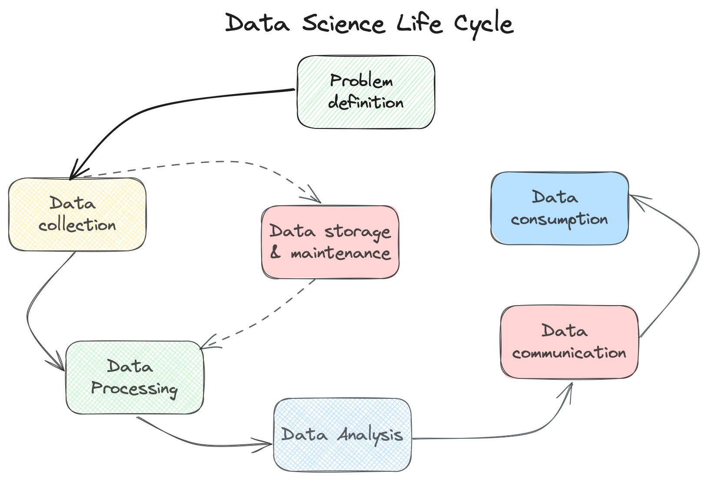
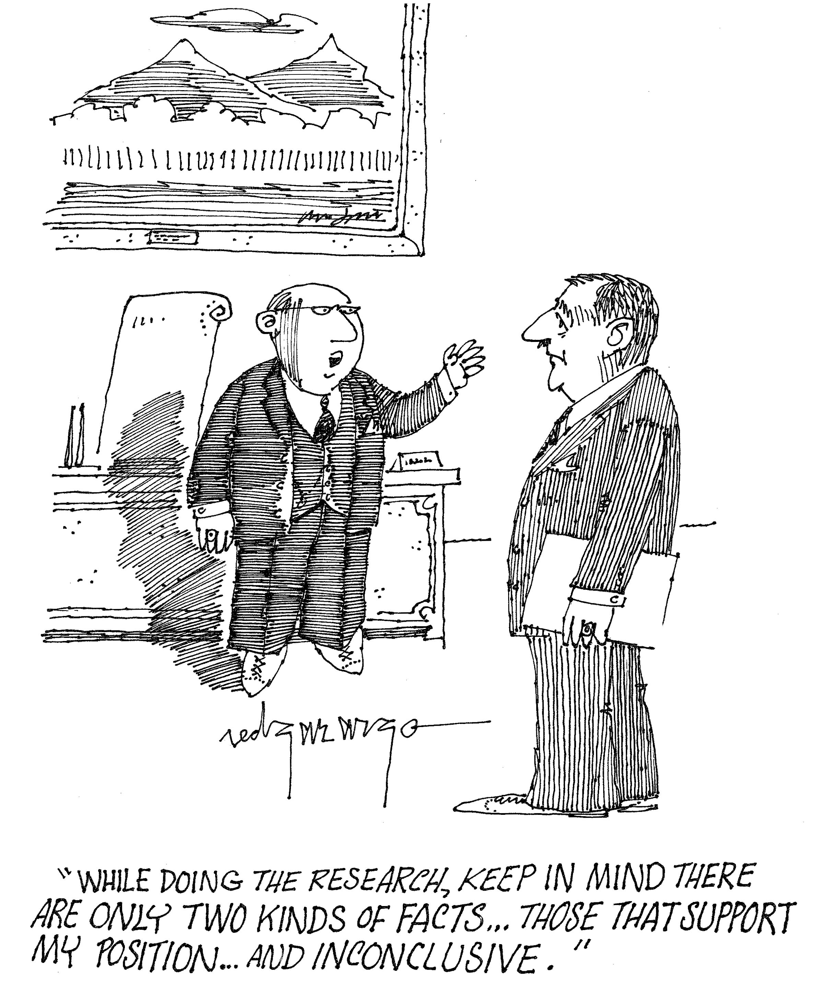

Bias in Data Science
What is Data Science?
These days we hear about data science all the time; it is all around us, embedded in the latest AI news about ChatGPT, as well as in mundane posts on social media. But what is it exactly? There are many opinions out there, with attempts to capture the essence of data science. My favorite one is from Cassie Kozyrkov, Chief Decision Scientist: “Data science is the discipline of making data useful.” Now, what does it mean to be “useful”? I am going to define it as guiding decisions to create a more equitable and comfortable world to live in. You can choose your own definitions, but for the purposes of this post we will use this one. So, how do we go about making the world a better place with data? I propose to start with the data science life cycle framework, which I developed to aid in identifying inherent biases at each phase of a data analysis project. This tool is designed to raise awareness of the various biases in data science, and promote a more responsible approach of working with data and making it useful.
Data science life cycle

Data science life cycle is the journey to uncover patterns in the world around us to solve real-life problems with the help of data and data science tools. We can define the following steps of this journey: problem definition, data collection, data processing, data analysis, peer review, data communication and data consumption. While not all steps apply to every data analysis project or study, these capture the essence of the process. Next, let’s review each step in more detail and discuss any obvious and not so obvious pitfalls.
Data science life cycle phases
Problem definition.
During this step, a data professional or researcher states a research question, defines a problem statement, establishes objectives, and defines the success criteria. The problem statement guides data collection and influences all subsequent steps. It’s important to understand that two different people might have very different convictions about the same subject or research goals. This is known as a researcher bias [1].
Scenario: For instance, we are trying to understand whether fossil fuels are directly related to the warming effect of the Earth. A researcher working at a fossil fuel company might be interested in identifying the patterns that would show that fossil fuels have lower impact than usually thought. At the same time, an analyst at a renewable energy company, tasked with advocating for replacing fossil fuels, may focus on uncovering patterns that reveal the direct link between fossil fuel consumption and greenhouse gas emissions, while downplaying potential negative impacts on employment during the transition.

Data collection.
This is a critical step in the research as it directly impacts the quality of data that data professionals will be working with in the future. Data can be collected using multiple different methods, which can be divided into active and passive categories. Active data collection methods involve direct interaction with the subjects of research via surveys, field studies, literature review, interviews and others. Passive methods, on the other hand, rely on existing technologies to sample data, such as remote sensing. While passive data collection naturally offers more objectivity, it is not entirely free of bias. In the end, it’s humans who program the machines and either due to complexity, cost or simple typos might introduce errors in the collection process, compromising data quality. Automation bias - the tendency to depend excessively on automated systems, which can lead to mistaken automated information overriding correct decisions - is real and it’s important to be aware of it. Active methods, in their turn, are prone to multiple biases such as sampling bias, confirmation bias, interviewer bias, overgeneralization bias and availability bias among others.
Scenario: A group of domestic and international researchers is studying climate adaptation across communities in Ghana. In Ghana most of the infrastructure is concentrated in the South of the country, where the weather conditions are milder and getting to the North of the country is expensive and time consuming [2]. Therefore researchers decide to focus on sampling the data from the Southern regions and if required extrapolate the findings to the rest of the country. In this scenario researchers committed availability, selection and interviewer biases since they collected data that was readily available and does not accurately represent the rest of the regions of the country. Though the data might be of high quality it cannot be used to draw conclusions about the whole country.
Data processing.
This phase involves getting collected data ready for processing by removing or transforming unwanted or noisy data from a dataset, classifying values, reorganizing and joining datasets collected at different regions or over different periods, and others. Analysts and data professionals processing the datasets can introduce errors and biases into the final datasets if they are not careful. For instance, they can accidentally include or exclude certain data points trying to remove noise (selection bias); introduce unintentional errors or incorrect interpretations based on their perspectives or expectations (observer bias); introduce unwanted temporal distortions, affecting the chronological order of events in the data (time-order bias).
Scenario: A group of students is tasked with processing historical annual precipitation data across different regions of the world to create input for a machine learning prediction model. When they combined datasets with precipitation data from the European continent with the dataset from the North American continent, they forgot to apply the correct daytime format. As a result, time-order bias slipped unnoticed into the final dataset.
Data analysis & modeling.
At this stage, data professionals create data models and evaluate their performance and interpret the outputs.
Source: XKCD: Machine Learning
This is the phase that generates findings, which can be influenced by a variety of biases, including the two most prevalent ones: aggregation bias and confirmation bias. Aggregation Bias occurs when the data inputs contain prejudices, which are then amplified in the outputs of a model. Confirmation bias happens when a person designing a model unconsciously favors information that confirms their pre-existing beliefs or hypotheses.
Scenario (real-life scenario): Law enforcement agencies in the US use criminal risk assessment algorithms based on historical crime data for training predictive models. While in theory these models aim to enhance the accuracy of predicting future crimes and guide the allocation of policing resources, in practice, they rely on historical crime data with baked-in biases from policing practices—such as over-policing in certain neighborhoods or against specific demographics. As a result, predictions from these models can lead to an increased police presence in already over-policed areas, perpetuating a cycle of bias and potentially exacerbating social inequalities [2].
Peer review.
Though it might not be applicable to all data science projects (it should be), it’s an important phase tasked with reviewing the findings, uncovering any biases and erroneous assumptions, and suggesting improvements. If a reviewer lacks sufficient expertise or motivation, they might overlook critical issues with the analysis. Moreover, endorsing or publishing a biased study might lead to an authority bias, where the study is given more consideration than it deserves, potentially propagating incorrect conclusions into decision-making.
Scenario (real-life example): Dr. Wei-Hock Soon, a scientist at the Harvard-Smithsonian Center for Astrophysics, published multiple studies showing that the sun’s energy can largely explain recent global warming. Though the study has been largely debunked, it got support from the climate denial groups and used in debates related to climate change policies [3].
Data communication.
This might be one the most critical phases of data science - making it comprehensible and available to the general public. This is also the stage when the facts can be easily distorted and misinterpreted. It is easy to manipulate data without committing illegal actions or presenting bogus findings. Data visualizations, in particular, can be a tool to mislead a reader intentionally or unintentionally. Common issues may include: using the wrong type of chart or graph, including too many variables, using inconsistent scale, poor color choices and others. Likewise, the omission of information perceived by a researcher or publisher as irrelevant or as giving a less favorable review of the paper can lead to the misrepresentation of important findings. This is known as reporting bias, where only a selection of results is included in an analysis, covering only a portion of the relevant evidence. Such practices can result in flawed decisions and misguided future research.
Source: XKCD: Cell Phones
Data consumption.
This is the final phase of the data science life cycle when findings are applied to solve real-life problems and serve as input for new or follow-up studies. Here, the onus is on the user or data consumer to understand the findings correctly before drawing conclusions. Even if all the preceding steps have successfully eliminated bias, the reader may still introduce a confirmation bias when interpreting the results.
Scenario (real-life example): A reader of the study on the Covid-19 vaccine holds a preconceived belief that vaccines cause illness. After reading the study, the reader draws the conclusion that because Covid-19 cases increased around the time when the vaccine was released, the vaccine indeed caused Covid-19. This conclusion ignores the fact that other factors played a role in the increase in Covid-19 cases, such as heightened levels of testing and improved monitoring [4].
Aggregated view on Data Life Cycle Phases & Biases
| Data Life Cycle Phase | Tasks | Common Biases |
|---|---|---|
| Problem definition | States a research question, defines a problem statement, establishes objectives, and defines success criteria. | Researcher bias |
| Data collection | Conduct surveys, field studies, literature review, interviews, record observations. | Sampling bias, confirmation bias, interviewer bias, overgeneralization bias, availability bias |
| Data processing | Clean data, classify data, remove and transform unwanted or noisy data from a dataset, reorganize, and join datasets collected at different regions or over different periods. | Selection bias, observer bias, time-to-order bias |
| Data analysis & modeling | Create data models and evaluate their performance and interpret the outputs. | Aggregation bias, confirmation bias |
| Peer review | Review the findings, uncovering any biases and erroneous assumptions, and suggest improvements to the analysis. | Authority bias |
| Data communication | Share the findings with the community and general public. | Reporting bias |
| Data consumption | Apply the findings to make decisions, solve real-life problems, and use them as input for new or follow-up studies. | Confirmation bias |
Conclusion
As we observe from our data science life cycle journey, data at every phase carries systemic biases that can easily skew findings and amplify disparities. If data professionals are not careful enough in their quest to make the world a better place, or in most cases, to simply solve mundane research and business problems, they might inadvertently exacerbate historical disparities and propagate them into the future via predictive models. Likewise, editors, peer reviewers, and the general public ought to be aware of the challenges and potential biases in the data science life cycle to become responsible consumers of data. The framework presented in this article is designed to assist in addressing these challenges and mitigating potential biases within data science, and as such to contribute to our goal of making the world a better place.
Citations
[1] How Bias Affects Scientific Research | Science News Learning. 4 Dec. 2020, source.
[2] UNDPGhana. Environment and Climate Change in Ghana Policy Brief. Dec. 2021, source.
[3] Gillis, Justin, and John Schwartz. “Deeper Ties to Corporate Cash for Doubtful Climate Researcher.” The New York Times, 21 Feb. 2015. NYTimes.com, source.
[4] Maxim Lisnic, Cole Polychronis, Alexander Lex, and Marina Kogan. 2023. Misleading Beyond Visual Tricks: How People Actually Lie with Charts. In Proceedings of the 2023 CHI Conference on Human Factors in Computing Systems (CHI ’23), April 23–28, 2023, Hamburg, Germany. ACM, New York, NY, USA 21 Pages. source.
Citation
@online{protsukha2023,
author = {Protsukha, Oksana},
title = {Bias in {Data} {Science}},
date = {2023-12-27},
url = {https://oksanaprotsukha.github.io/posts/2023-12-27-bias-in-data-science/},
langid = {en}
}